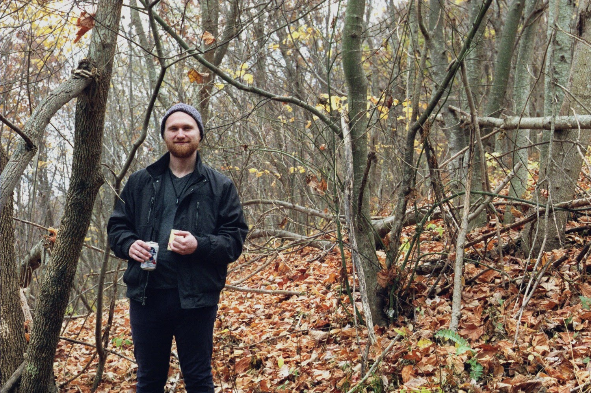

Current Projects

JavaScript
Focusing on pure JS to improve understanding of fundamental JS concepts. Reading Eloquent JS by Marijn Haverbeke.
Code for Good
Building/reworking local non-profit sites to gain experience developing while contributing to a meaningful cause. First project for Code Virginia.